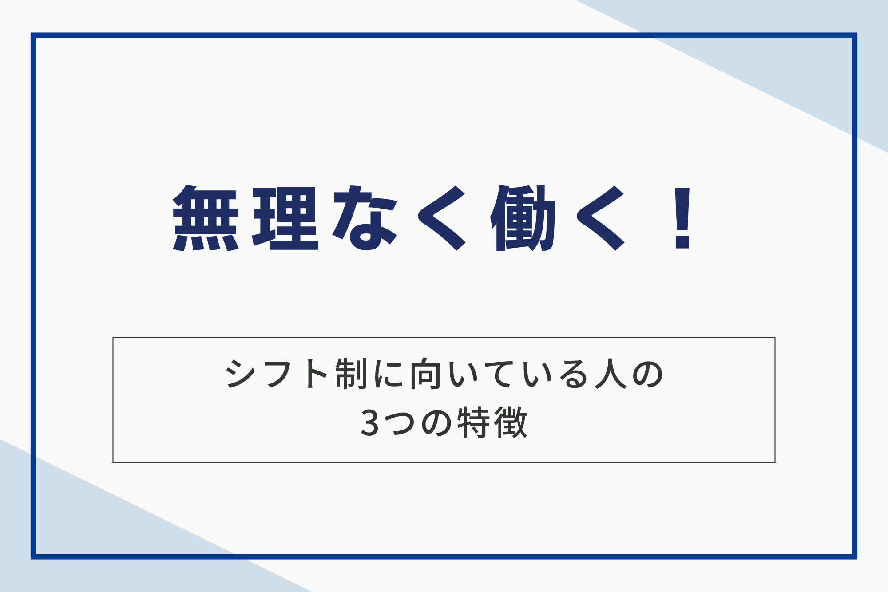
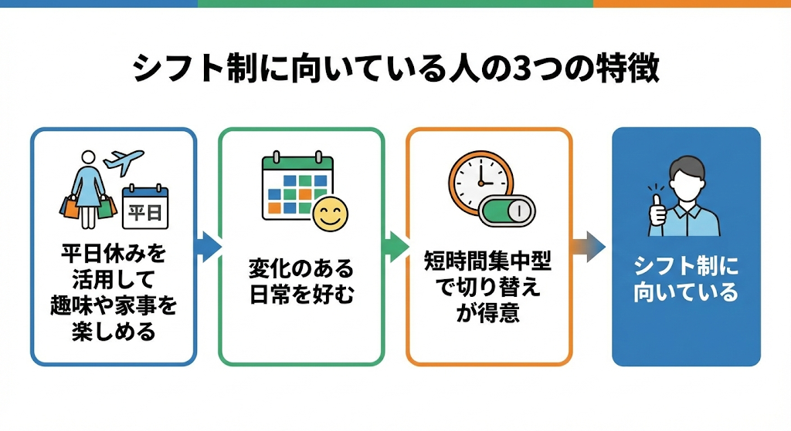
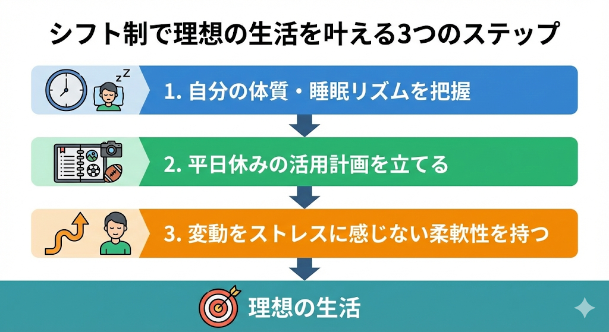
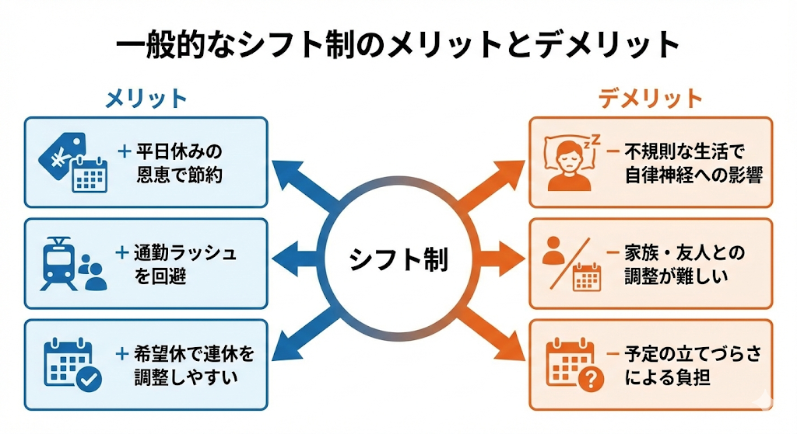
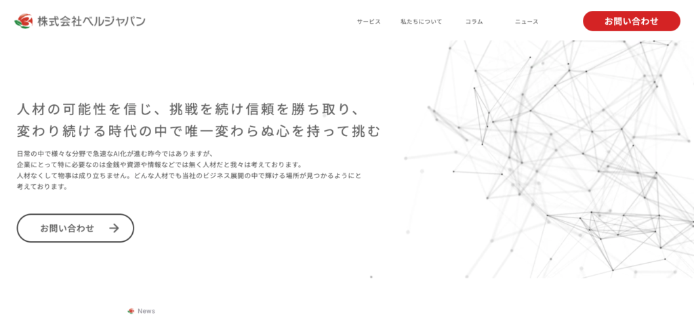

シフト制に向いてる人とは、自分の時間を大切にしながら効率的に働きたいと考えている人です。シフト制の仕事に就こうか悩んでいるけど、休みが不規則になることや早朝・深夜の勤務に不安を感じている方もおられるのではないでしょうか。
自分に合わない働き方を選んでしまうと、心身の健康を損なうリスクがあります。以下のような方は、シフト制に向いています。
- 特徴①平日休みを最大限に活用して趣味や家事を楽しめる人
- 特徴②固定されたルーティンよりも変化のある日常を好む人
- 特徴③短時間集中型でプライベートと仕事の切り替えが得意な人
この記事では、シフト制に向いている人の具体的な特徴や、生活リズムを安定させるためのステップ、メリットとデメリットについて包括的に解説します。また、よくある質問も紹介していますので、ぜひ参考にしてください。

シフト制に向いてる人の3つの特徴
シフト制という働き方は、すべての人に一律に適しているわけではありません。ここでは、シフト制で真価を発揮し、ストレスなく働ける人の具体的な特徴を紹介します。
◆シフト制に向いてる人の特徴の概要図

それぞれについて詳しくみていきましょう。
特徴①平日休みを最大限に活用して趣味や家事を楽しめる人
シフト制の魅力は、土日祝日に混雑する場所へ平日の空いている時間帯に行けることです。人気の飲食店やレジャー施設、役所や銀行など、平日の日中でなければスムーズに利用できない場所をストレスなく活用できる人は、シフト制の働き方に非常に向いています。
旅行代金が安く設定されている平日に出かけたり、静かな環境で買い物を楽しんだりすることを重視するタイプにとって、シフト制は生活の質を向上させる大きな要因となります。自分の時間を混雑に邪魔されたくない人にとって、これ以上の環境はありません。
特徴②固定されたルーティンよりも変化のある日常を好む人
毎日同じ時間に起き、同じ電車に乗り、同じ時間帯に働くという固定的なスケジュールに息苦しさを感じる人は、シフト制が適しています。勤務時間が日によって変わることで、生活に程よい変化が生まれ、マンネリ化を防ぐ効果が期待できるためです。
朝の時間をゆっくり過ごせる日もあれば、夕方以降を自由に使える日もあるという柔軟なサイクルは、好奇心旺盛な人にとって刺激となります。予定を固定せず、その時々のシフトに合わせて生活をカスタマイズできる柔軟性を持つ人には最適なスタイルです。
特徴③短時間集中型でプライベートと仕事の切り替えが得意な人
シフト制の職場は、勤務時間が明確に区切られている場合が多く、残業が発生しにくい傾向にあります。仕事が終わればすぐに自分の時間に切り替えたいと考えている人や、オンとオフの境界線をはっきりさせたい人にとって、シフト制は大きなメリットです。
限られた勤務時間内で効率よくタスクをこなして、退勤後は仕事の持ち越しをせずにリフレッシュできる精神的な切り替えの早さは、シフト制を長く続けるための大切な要素です。私生活を第一に考え、仕事はそのための手段と割り切れる人こそ輝ける働き方といえます。

シフト制で理想の生活を叶える3つのステップ
シフト制という働き方を選択し、それを成功させるためには、事前の準備と自己理解が欠かせません。ただ働くのではなく、戦略的に自分のリズムを構築することが重要です。
◆シフト制で理想の生活を叶える3つのステップの概要図

それぞれについて詳しくみていきましょう。
ステップ①自分の体質や睡眠リズムを客観的に把握する
まずは、自分が「朝型」なのか「夜型」なのか、あるいは短時間睡眠でも平気な体質なのかを正確に知ることからはじめましょう。シフト制には早番、遅番、夜勤などがあるため、自分のバイオリズムに合わない時間帯を無理に続けると、自律神経を乱す原因となります。
厚生労働省が提供する「健康づくりのための睡眠ガイド2025」によれば、適切な睡眠時間は個人差があるものの、生活習慣の乱れは健康リスクを高めるとされています。自分の限界を知り、どのシフトなら無理なく働けるかを明確にすることが第一歩です。
ステップ②平日休みのメリットを私生活にどのように活かすか計画する
シフト制の恩恵をフルに受けるために、平日休みをどう使うか具体的なプランを立ててください。資格取得のための勉強時間に充てる、平日の安いプランでジムに通う、あるいは混雑を避けて家族や友人と過ごすなど、自分なりの「平日ならではの楽しみ」を見つけましょう。
休日の目的が明確であれば、不規則な勤務に対するモチベーションを維持しやすくなります。土日休みでは得られない「お得感」を実感することが、精神的な充実感に直結します。
ステップ③勤務時間の変動をストレスに感じない柔軟性を持つ
毎週、あるいは毎月変わるスケジュールを「面倒」と捉えるのではなく、「自由度が高い」と捉える思考の転換が必要です。急なシフト変更や希望休の調整に対して柔軟に対応できる心の余裕を持つことで、職場でのコミュニケーションも円滑になります。
固定概念に縛られず、変化を楽しむ姿勢を持つことが、不規則な生活を「自分らしいリズム」に変える秘訣です。予定が変動することを前提としたライフスタイルを構築しましょう。
一般的なシフト制の3つのメリットとデメリット
シフト制には、固定休の仕事にはない独自の魅力がある一方で、特有の難しさも存在します。ここでは、実際にシフト制で働く人が実感しやすい代表的なメリットとデメリットをそれぞれ紹介します。
◆シフト制のメリット・デメリットの概要図

それぞれについて詳しくみていきましょう。
メリット①平日休みの恩恵で混雑を避けつつ節約ができる
シフト制のメリットは、世間が仕事をしている平日に休みを確保できる点です。人気の観光地や飲食店を待ち時間なしで利用できるだけでなく、平日のランチ料金や宿泊プランを安く利用できるため、経済的なメリットも大きいです。
役所や銀行、病院といった平日のみ営業している機関へも、仕事を休むことなくスムーズに通えます。土日の混雑にストレスを感じることなく、静かな環境で自分の時間を贅沢に使える点は、この働き方ならではの特権です。
メリット②通勤ラッシュを回避してストレスなく移動できる
勤務時間が日によって異なるシフト制では、朝の通勤ラッシュの時間帯を外して移動できる機会が増えます。満員電車の圧迫感や道路の渋滞に悩まされることが減り、体力の消耗を最小限に抑えながら職場へ向かえる点がメリットです。
朝をゆっくり過ごしてから午後に出勤したり、早朝に仕事を終えて明るいうちに帰宅したりすれば、一日の時間を有効に活用できます。移動のストレスを軽減できることは、長期的に見て精神的な健康維持にも大きく寄与します。
メリット③希望休制度の活用で連休や特定日の休みを調整しやすい
多くのシフト制の職場では事前に希望休を申請できるため、特定のイベントや個人の予定に合わせてスケジュールを組めます。固定休の仕事では難しいような「平日の3連休」なども、事前の調整次第で実現可能です。
周囲のスタッフと協力しながら調整を行うことで、趣味や旅行といったプライベートの予定を優先させた働き方が叶います。自分のライフステージや行事に合わせて、働く日と休む日をカスタマイズできる柔軟性は、私生活を重視する人にとって強い味方となります。
デメリット①不規則な生活習慣による自律神経への影響がある
シフト制の課題として、起床や就寝の時間が日によってバラバラになり、体内時計が乱れやすくなる場合が珍しくありません。日勤と夜勤が混在する職場では、睡眠の質が低下しやすく、疲労が抜けにくくなる傾向にあります。
厚生労働省の資料でも、不規則な睡眠は生活習慣病のリスクを高める要因として指摘されています。体調を維持するためには、遮光カーテンを利用したり寝る前のルーティンを固定したりするなど、自己管理能力が欠かせません。
出典：睡眠と生活習慣病との深い関係｜厚生労働省 e-ヘルスネット
デメリット②家族や友人とのスケジュール調整が難しくなる
周囲の友人や家族が土日休みの仕事をしている場合、休みが合わず疎遠になってしまう可能性があります。大切なイベントや飲み会が週末に開催される際、自分だけ仕事で参加できないといった寂しさを感じる場面も少なくありません。
子どもがいる家庭では、学校の行事や週末の習い事に合わせて休みを取るために、ほかのスタッフとの調整が必要になります。社会的なつながりや家族との時間を維持するために、周囲への配慮や事前のコミュニケーションが欠かせない要素となります。
デメリット③予定の立てづらさによる精神的な負担が発生する
シフトが発表される時期が直前になる職場の場合、数週間先の予定を立てにくいという不便さがあります。習い事の固定予約や長期旅行の計画を立てる際、シフトが確定するまで返事を保留しなければならないケースも出てきます。
また、急な欠員が出た際に応援を頼まれることもあり、自分のペースを守るのが難しくなる場合も少なくありません。変動するスケジュールに対して、その都度ストレスを感じることなく対応できる柔軟な精神力を持っておくことが、長く続けるための鍵となります。
シフト制の3つの種類
シフト制と一口に言っても、その運用ルールは職場によってさまざまです。ここでは、代表的なシフト形式について、それぞれの仕組みやメリットを具体的に解説します。
種類①完全固定シフト制
完全固定シフト制は、毎週決まった曜日や時間帯に勤務するスタイルです。「月・水・金の9時から15時まで」といった形で固定されるため、生活リズムが非常に安定しやすく、習い事や副業などの予定も立てやすい点が特徴です。
主婦（夫）の方や学生など、プライベートの時間をあらかじめ固定しておきたい人に最適です。一方で、一度決まった時間を変更するにはほかのスタッフとの交代が必要になるため、急な予定変更への柔軟性はやや低くなります。
種類②自由シフト制（希望シフト制）
自由シフト制は、一定期間ごとに自分の働きたい日や時間を申請するスタイルです。月ごとや2週間ごとに希望を出す形式が多く、テスト期間や旅行など、月によって予定が大きく変動する人にとって非常に自由度の高い働き方です。
自分の都合に合わせて働く量を調整できるため、プライベートを最優先にしたい人に向いています。しかし、希望者が多い日はシフトに入れない可能性もあり、毎月の収入を一定に保つには、職場とのこまめな調整が必要です。
種類③交代制シフト（2交代・3交代）
交代制シフトは、工場や病院、介護施設などで多く採用されるスタイルで、24時間を「日勤」や「夜勤」などの枠で区切って交代で勤務します。「3交代制」は実働時間が8時間程度に抑えられるため、長時間労働になりにくいメリットがあります。
深夜手当がつくため、効率的に高収入を目指したい人には非常に有利な働き方です。一方で、日勤と夜勤が交互にやってくるため、体調管理にはほかのシフト制以上に気を配らなければなりません。
なお、準夜勤については、こちらの記事で詳しく解説しています。
関連記事：【2025年最新】準夜勤とは？夜勤との違い、メリット・デメリット、時間帯を解説
交代勤務の仕事探しなら「株式会社ベルジャパン」

シフト制や交代勤務での働き方を検討しているなら、株式会社ベルジャパンにご相談ください。当社は、求職者様一人ひとりのライフスタイルに合わせた最適な職場環境を提案することを得意としています。
豊富な求人情報のなかから、あなたの体質や希望にぴったりのシフト体系を持つ企業をご紹介します。不規則な生活への不安を解消し、自分らしく働ける未来を一緒に見つけましょう。
「自分に合うシフトがわからない」「今の生活リズムを改善したい」という方は、ぜひ一度無料相談をご利用ください。専門のコンサルタントがあなたのキャリアを全力でサポートいたします。⇒株式会社ベルジャパンの公式サイトはこちら
シフト制に向いている人でよくある3つの質問
シフト制に向いている人でよくある質問をご紹介します。それぞれ詳しくみていきましょう。
質問①未経験からでもシフト制の仕事に馴染めますか？
未経験の方でも、シフト制の仕事にはスムーズに馴染めるケースが多いです。多くの職場では、不規則な勤務時間に体が慣れるまでのサポート期間を設けており、最初は日勤帯で業務を覚えてから、徐々に夜勤などへ移行する体制を整えています。
また、交代勤務が主流の現場ではマニュアル化が進んでおり、次に働く人への引き継ぎ体制が確立されているため、1人で責任を抱え込む心配もありません。チームで協力して時間を管理する習慣が身につくため、未経験からでも計画的に働くスキルを養えます。
質問②シフト制の仕事は将来的なキャリアアップにつながりますか？
シフト制の仕事であっても、着実なキャリアアップは十分に可能です。交代勤務が導入されている製造現場やサービス業では、現場での実務経験を積んだ後、チームをまとめるリーダーや、シフト全体を管理する工程管理職への道が開かれています。
効率的な人員配置や時間管理のスキルは、どの業界でも高く評価される汎用性の高い能力です。また、夜勤手当を活用して資金を蓄え、資格取得などの自己投資に充てれば、専門性を高めて市場価値を向上できます。
質問③シフト制の仕事は、長く続けても精神的な負担になりにくいですか？
シフト制は、自分に合ったリズムさえ構築できれば、精神的な負担を最小限に抑えて長く続けられる働き方です。土日休みの固定勤務とは異なり、平日にしっかりとリフレッシュできるため、人混みによるストレスや役所などの手続きによる焦燥感から解放されます。
また、残業が少なく退勤時間が明確な職場が多いため、オンとオフの切り替えがスムーズになり、仕事の悩みを私生活に持ち込みにくい点もメリットです。柔軟にスケジュールを調整して、自分の時間を最優先に確保する習慣を持つことで、精神的なゆとりを保ちながら安定して働けます。
自分に合ったシフトを選んで、働き方を考えよう！
シフト制という働き方は、自分の性格や体質を理解して、メリットを賢く活用できる人にとって非常に魅力的な選択肢です。不規則さを「不便」ではなく「自由」と捉えることができれば、公私ともに充実した毎日を送れます。
理想の働き方を手に入れるために、以下のステップを意識してみてください。
- ステップ①自分の体質や睡眠リズムを客観的に把握する
- ステップ②平日休みのメリットを私生活にどのように活かすか計画する
- ステップ③勤務時間の変動をストレスに感じない柔軟性を持つ
まずは、自分がどのようなリズムで過ごしたいのかを書き出してみることから始めてみましょう。もし、どの仕事が自分に合っているか迷ったときは、専門のエージェントに相談して、第三者の視点からアドバイスをもらうのも有効な手段です。
株式会社ベルジャパンの専門コンサルタントは、豊富な求人情報と専門知識を活かし、あなたの希望する勤務体系や体力的な負担を考慮した最適な仕事を紹介してくれます。高収入を目指しながらも、無理のない働き方を実現したい方は、ぜひ一度相談してみましょう。⇒株式会社ベルジャパンの公式サイトはこちら